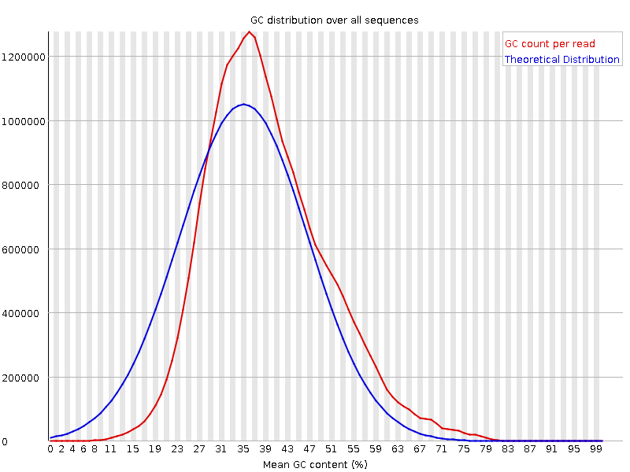

![[OK]](Icons/tick.png) Basic Statistics
Basic Statistics
| Measure | Value |
|---|---|
| Filename | t4.2.fq |
| File type | Conventional base calls |
| Encoding | Sanger / Illumina 1.9 |
| Total Sequences | 30742878 |
| Filtered Sequences | 0 |
| Sequence length | 100 |
| %GC | 38 |
Per base sequence quality
Per sequence quality scores
![[FAIL]](Icons/error.png) Per base sequence content
Per base sequence content
Per base GC content
![[WARN]](Icons/warning.png) Per sequence GC content
Per sequence GC content

Per base N content

Sequence Length Distribution
Sequence Duplication Levels
Overrepresented sequences
No overrepresented sequences
Kmer Content

| Sequence | Count | Obs/Exp Overall | Obs/Exp Max | Max Obs/Exp Position |
|---|---|---|---|---|
| AAAAA | 19234130 | 2.4732704 | 5.88474 | 2 |
| TTTTT | 19300385 | 2.3968325 | 5.0617905 | 2 |
| GAAGA | 6893395 | 2.2209105 | 5.051098 | 2 |
| CGCCG | 1620295 | 1.9835021 | 5.5434036 | 1 |
| CGACG | 2513150 | 1.9715606 | 7.9435396 | 1 |
| GAAAA | 9635055 | 1.9611135 | 5.017739 | 2 |
| CGAGG | 2452565 | 1.9517077 | 5.2634373 | 1 |
| CTTCT | 5904100 | 1.8103818 | 5.335833 | 1 |
| CGGCG | 1452470 | 1.8036335 | 5.153897 | 1 |
| CTCGA | 3433345 | 1.6897959 | 8.785411 | 1 |
| TCGAG | 3381645 | 1.6882912 | 5.108816 | 7 |
| CGCGG | 1343460 | 1.6682682 | 5.403801 | 1 |
| CGCGA | 2064875 | 1.6198897 | 6.0327134 | 1 |
| CGAGA | 3200905 | 1.609228 | 5.4183693 | 1 |
| CTGGA | 3197220 | 1.5962167 | 6.831958 | 1 |
| CTTCC | 3303670 | 1.591789 | 5.4096527 | 1 |
| CTCCA | 3198655 | 1.551964 | 7.0903277 | 1 |
| CTTTT | 7914615 | 1.5444502 | 6.5558743 | 1 |
| ATCGA | 4871155 | 1.5363915 | 5.6470523 | 6 |
| CGCCA | 1954495 | 1.5115542 | 5.6078944 | 1 |
| CGATC | 3061640 | 1.5068531 | 5.1424785 | 4 |
| CTCGT | 3041030 | 1.4863191 | 7.7040133 | 1 |
| CTTCG | 2970580 | 1.4518863 | 6.53453 | 1 |
| CCGGC | 1179375 | 1.443745 | 5.0057826 | 1 |
| CGAAG | 2863230 | 1.4394649 | 5.346067 | 1 |
| CTTCA | 4561365 | 1.4084349 | 5.793812 | 1 |
| CTCGC | 1818070 | 1.3962858 | 6.619375 | 1 |
| CTGGC | 1775370 | 1.3831048 | 5.0809665 | 1 |
| CTCCT | 2865570 | 1.3807015 | 5.0720143 | 1 |
| CTCGG | 1748440 | 1.362125 | 8.114733 | 1 |
| CGAAA | 4167160 | 1.3235354 | 5.64952 | 1 |
| GAATC | 4047295 | 1.2765411 | 5.4001946 | 4 |
| AATCG | 3937330 | 1.2418574 | 5.1514525 | 5 |
| CTTTG | 3987670 | 1.2403327 | 5.471129 | 1 |
| CTTGG | 2486595 | 1.232818 | 5.8358197 | 1 |
| CTTGA | 3859265 | 1.2087849 | 5.373331 | 1 |